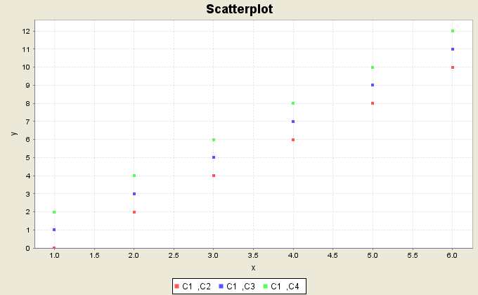

Graph > Scatterplot
A scatterplot shows a collection of points on an x-y plane in
cartesian coordinates.

The scatterplot graph utility allows the user to specify a number of
series, each of which has a collection of (x, y) points specified
by a x column variable and y column variable.
It also provides the options of having a plot title, axis labels,
legend, and regression lines.
- To open the scatterplot utility, select Graph > Scatterplot.
- To add a series of (x, y) points to the plot,
select the column variable containing the x coordinates in
the X variable drop-down menu, select the column variable
containing the y coordinates in the Y variable drop-down menu, and
then click the Add Series button. The added series will be shown
in the Graph X,Y Series list. The x and y column variables
must have the same number of items.
- To remove a series from the Graph X,Y Series list,
select the item and click the Remove Series button.
- Enter labels for the x and y axis in the corresponding text fields.
- Enter the plot title in the Plot Title: text field.
- Select the Show Legend check box to show a legend indicating
the different series.
- Select the Show regression curve check box to show a regression curve
for each data series. Choose the desired regression model, linear or
non-linear.
- Click OK to create the scatterplot.